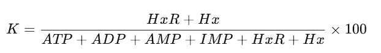
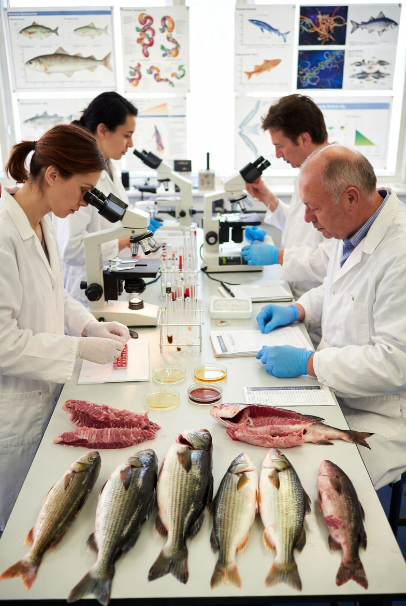
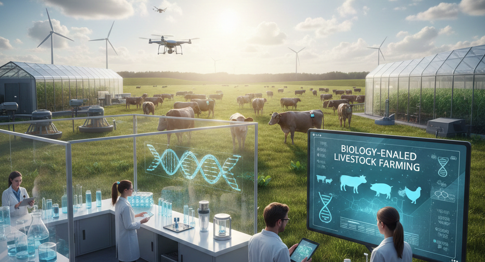
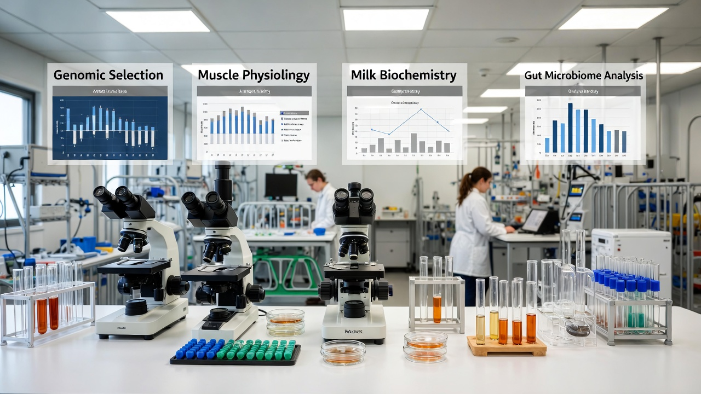
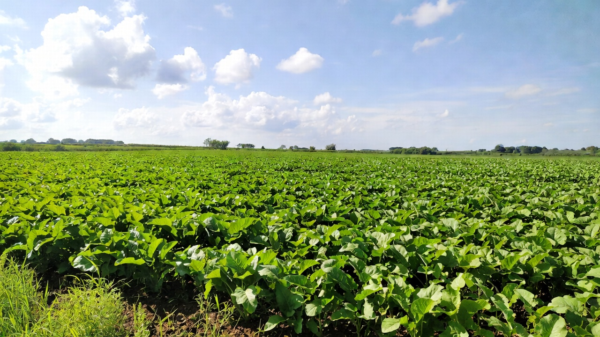
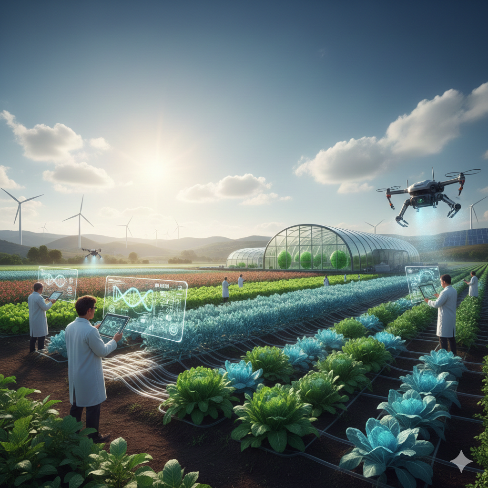
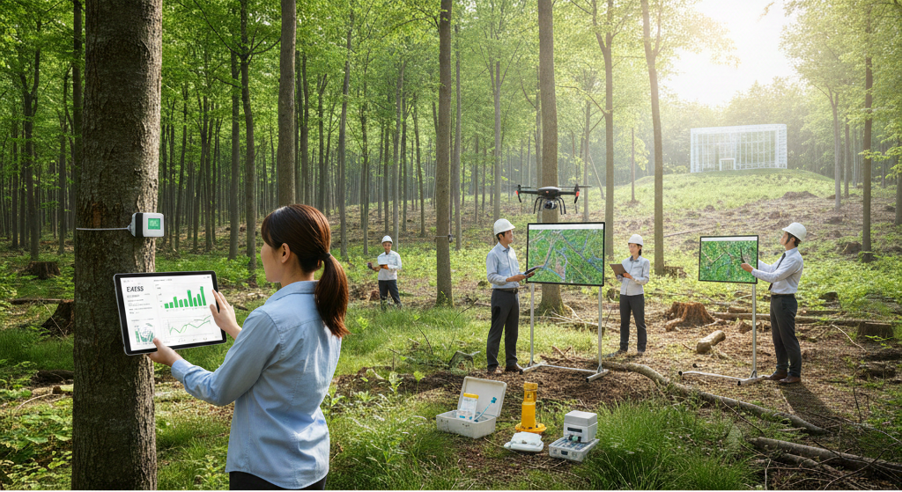
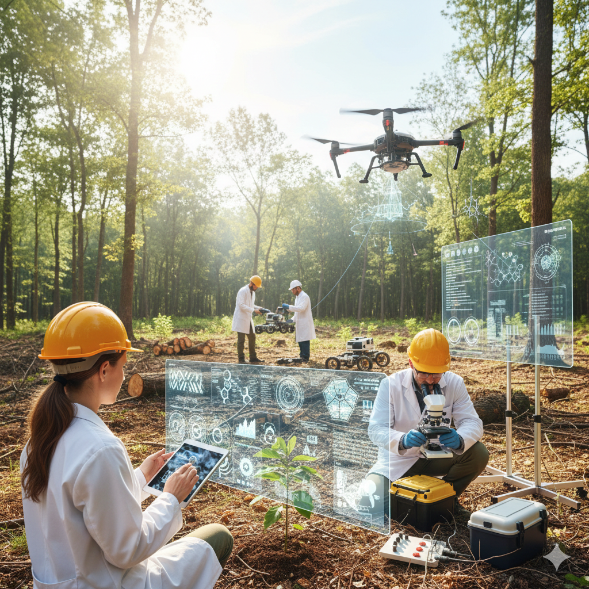

▼目次
水棲生物の生命現象（代謝、変性、分解）を理解は、水産食品の安全性を担保するだけでなく、限られた海洋資源を最大限に活用して高付加価値な製品を創出し経済市場へ投入する必須条件である。
水棲生物研究と水産加工は「生物学的特性の理解」という共通の基盤の上に成り立っている。水産加工とは、水棲生物が有する生体高分子（タンパク質、脂質等）の物理化学特性を、死後の代謝プロセスを制御しながら人為的に改変・保持するプロセスである。
加工原料としての水棲生物である魚類・甲殻類・軟体動物はそれぞれ異なる骨格構造／筋肉組織／内分泌系を有する。たとえば硬骨魚類における赤色筋（遅筋）と白色筋（速筋）の比率はその魚種の遊泳能力や回遊性に依存し、赤色筋と白色筋の比率が加工時の肉質や脂質含有量ひいては酸化安定性に直結する。
近年は環境DNA（eDNA）を用いた生息域調査が実用化されている。水中に放出された粘膜や排泄物由来のDNA断片を解析し、捕獲調査に頼らず特定水域の生物相を網羅的に把握することが可能となった。持続可能な加工原料の確保（Maximum Sustainable Yield / MSY:最大持続生産量）を算定する上で生物学的エビデンスに基づいた指標となっている。
水産加工の品質を決定付ける最大要因は、死後の生化学的変化である。
魚類が死亡すると好気的呼吸の停止に伴い、筋肉中のアデノシン三リン酸（ATP）が減少する。ATPの減少はアクトミオシンの結合を招き、死後硬直を引き起こす。このプロセスは温度に依存し、また個体差のストレス状態や運動量にも大きく左右される。
生物化学的観点から、鮮度は消長してしまうATPの分解産物の比率を示す「K値」によって定量化されている。
ATPは
ATP → ADP → AMP → IMP（イノシン酸）→ HxR （イノシン） → Hx（ヒポキサンチン）
の経路で分解され、K値は以下の式で定義される。

うま味成分であるイノシン酸（IMP：Inosine Monophosphate）の分解速度を制御することが、水産加工品の食味向上に直結している。
水産加工の本質は、魚介類筋肉タンパク質の「変性」と「ゲル化」の制御にある。
魚類筋肉の約60～70%を占める筋原線維タンパク質（主にミオシンとアクチン）は、陸上動物と比較し熱安定性が低い。熱安定性が低いのは水棲生物が低温環境に適応するために、タンパク質構造の柔軟性を保持するせいだ。熱安定性が低いタンパク質構造の柔軟性を利用し、練り製品（かまぼこ等）の製造においては「低温での座り（ゲル形成）」という独自の加工プロセスを生み出した。
以下に代表的な水棲生物のタンパク質構成の概略を示す。
| 赤身魚（マグロ等） | 白身魚（スケトウダラ等） | 軟体動物（イカ等） | |
|---|---|---|---|
| ミオグロビン含有量 | 高い | 低い | 極めて低い |
| 結合組織（コラーゲン） | 中程度 | 低い | 高い |
| 熱安定性 | 比較的高い | 低い | 特異的（収縮しやすい） |
| 主な加工用途 | 刺身、缶詰 | 練り製品 | 乾燥品、燻製 |
水棲生物の内臓組織は強力なプロテアーゼ（タンパク質分解酵素）を含有している。死後、これらの酵素が筋肉に浸透することで組織の軟化が進む「自己消化」が発生する。イカの塩辛などの発酵食品は、微生物による発酵と自己消化を同調させ生物プロセスを利用した加工形態である。
水産物の安全性確保には、腸炎ビブリオ（Vibrio parahaemolyticus）やリステリア・モノサイトゲネス（Listeria monocytogenes）等の微生物学の知見が不可欠である。近年では乳酸菌が産生するバクテリオシンを用いたバイオ保存技術（Biopreservation）が注目され、人工化学保存料に頼らない防御手法の確立が進んでいる。
クリスパー・キャスナイン（CRISPR/Cas9）等のゲノム編集技術を用い、ミオスタチン遺伝子を欠損させることで筋肉量を増加させた「肉厚マダイ」などの研究が進んでいる。加工歩留まりの向上という産業的要請に対し、発生学的なアプローチから解決を図る試みだ。
海洋資源の枯渇に対する抜本的な対策として、魚類の幹細胞を体外で培養する「培養魚肉」の研究が加速している。筋細胞の増殖・分化に関する生物学の細胞知見を、そのまま加工工程の設計図として利用しようと試みられている。

畜産研究と畜産加工は、家畜という生物個体の生命現象を産業的に最適化するプロセスで、遺伝学・生理学・栄養学・組織細胞学の学際的統合にある。
食肉や乳・卵といった畜産物は、生体組織としての機能（運動／代謝／分泌）を停止させ、食品としての機能（栄養／嗜好性／保存性）を付与する変換プロセスの産物である。
現代の畜産は単なる増産を目的の農産アプローチを超え、分子レベルでの形質制御と死後代謝における生化学的変換の精密な操作を展開している。
生物学的見地から見た畜産研究は、個体の生産性向上から加工・流通過程における品質保持、さらには地球環境への配慮を包括するシステムの一部である。
家畜・人間・環境の健康は相互に密接に関連しており（One Healthの理念）、畜産加工における微生物学的安全性やアニマルウェルフェアに基づく生理学的ストレスの低減が求められている。
今後はデジタル表現型解析（フェノミクス）とオミクス解析を統合した「精密畜産（Precision Livestock Farming）」が加速し、個体ごとの生物学的ポテンシャルを最大限に引き出す加工技術の確立が期待されている。

畜産研究の最上流に位置するのは、遺伝資源の同定と形質制御である。
近年のゲノム解析技術の向上により単一塩基多型（SNP）を用いたゲノムワイド選択（Genomic Selection: GS）が主流となっている。成長率・産乳量・肉質（脂肪交雑）などのポリジーン形質（多因子遺伝形質）を、ゲノム全体の情報を基に推定する手法である。従来の血統に基づく育種価予測と比較し世代間隔を劇的に短縮し、選抜精度を向上させた。
CRISPR/Cas9をはじめとするゲノム編集技術は、特定の遺伝子を標的とした精密な形質改良を可能にした。たとえばミオスタチン遺伝子（Myostatin: MSTN）のノックアウトによる筋肉量の増大やアレルゲンフリーな乳成分を生成する家畜の作出などが研究されている。加工現場における「歩留まり」や「機能性」を、個体発生の段階から設計する試みである。
畜産加工において、筋肉から食肉への変換（Meatization）は、動的な生物学プロセスの最たるものだ。
骨格筋は、収縮特性と代謝経路の違いから、大きく赤筋（Type I：遅筋、酸化型）と白筋（Type II：速筋、解糖型）に分類される。家畜の種類や部位、運動生理状態によってこれらの比率は異なり、食肉の保水性・色調・食感に決定的な影響を及ぼす。たとえば豚肉における白筋の割合は、加工時のドリップ（汁液）の流出や加熱後の硬さに直結するため、組織学的観察は品質予測の指標となる。
家畜の屠畜後、酸素供給の停止により筋肉内は嫌気的代謝へと移行する。
1. 糖原病（グリコーゲン / glycogen）の分解: 乳酸が蓄積し、pHが低下（約7.0から5.5付近へ）する。このpH低下速度と最終到達値は、タンパク質の変性状態を左右し、肉質異常（PSE肉など）の原因となる。
2. 死後硬直（Rigor Mortis）: ATPの枯渇により、ミオシンとアクチンが不可逆的に結合し、アクトミオシンを形成する。
3. 熟成（Aging）と自己消化: カルパイン（カルシウム依存性プロテアーゼ）等の内因性酵素が、Z線付近の構造タンパク質を限定分解することで組織が軟化し、ペプチドやアミノ酸といったうま味成分が生成される。
このプロセスは細胞学的には一種のプログラムされた細胞死（アポトーシス）の延長線上ととらえられている。
乳は、哺乳動物の乳腺上皮細胞から分泌される複雑なコロイド系である。
乳タンパク質の約80%を占めるカゼインは、リン酸カルシウムを介してカゼインミセルという巨大な粒子構造を形成している。チーズ製造におけるレンネット（キモシン）の作用は、カゼインの特定の結合を限定加水分解し、ミセルの安定性を崩すことで疎水結合によるゲル化を誘発する生化学反応である。
乳中に分散する脂肪球は、乳脂球膜（MFGM: Milk Fat Globule Membrane）という三層のリン脂質二重層に包まれている。この膜構造は単なる界面活性剤の役割を超え、脳機能発達に関与するスフィンゴミエリンや多様な生理活性タンパク質を含有している。これらの生物学的構造を壊さずに保持し特定の処理（ホモジナイズ等）で改変することが、乳製品の口当たりや栄養価を決定づけている。
家畜の生産効率は個体そのものの生理機能だけでなく、消化管内に共生する微生物叢（マイクロバイオーム）に依存している。
牛や羊などの反芻動物において、第一胃（ルーメン）は巨大な生物反応器（バイオリアクター）として機能する。微生物によるセルロースの分解、および揮発性脂肪酸（VFA）の生成は、家畜のエネルギー源の70%以上を賄う。
ルーメン内の微生物群集は、バクテリア／アーキア／真菌／原生動物から構成され、その多様性と機能的相互作用が消化効率と健康状態に直結する。メタゲノム解析により、特定の微生物種が高効率な繊維分解やメタン生成に寄与していることが明らかとなっている。
近年では環境負荷低減の観点から、メタン生成菌（Methanogen）の代謝経路を特異的に阻害しメタン産生を抑制する飼料添加物の開発も進められている。
畜産加工品の保存性は、微生物の制御（抑制と利用）に基づいている。
生ハムやソーセージの発酵工程では、乳酸菌やブドウ球菌によるpH低下と硝酸塩還元が行われる。ボツリヌス菌等の病原菌の増殖を抑制すると同時に、ミオグロビンとの反応による固定的な発色（ニトロシルミオグロビン形成）を実現している。
近年のバイオ保存技術（Biopreservation）では、特定のバクテリオシン産生菌をスターターとして用いることで、化学的添加物を低減した安全な製品づくりが進んでいる。
骨格筋の衛星細胞（サテライト細胞）を体外で大量培養し、スカフォールド（足場材料）を用いて組織化する「細胞農業」は、再生医療技術の転用である。細胞の増殖因子（Growth Factors）のシグナル伝達経路の解明や筋管細胞への分化誘導効率の最適化といった、純粋な細胞生物学の研究成果がそのまま「製造ライン」の設計指針となる。
脂肪細胞・筋細胞・血管内皮細胞を適切な空間配置で配置する3Dバイオプリンティング技術は、単なるミンチ状の培養肉から、より天然の肉に近いステーキ状の構造体への進化を可能にしている。組織構造を工学的に再構築するプロセスである。

現代の農学は、伝統的な交配育種や経験則に基づく栽培技術の域を脱し、分子生物学・細胞生理学・オミクス解析を統合した「植物システムの最適化工学」へと変貌を遂げている。光合成を起点とする太陽エネルギーの固定から複雑な二次代謝産物の集積そして収穫後の生理的変遷に至るまで、植物の生命サイクル全体を対象としている。
農産品加工の本質は、植物組織が有する生物ポテンシャルを物理化学や微生物学的で再構成し、食品としての機能性（栄養／嗜好／保存性）を極大化・大量生産大量消費することにある。
生物学見地による農研究と農産品加工の統合は、人口爆発と気候変動の課題に対し有力な解決策を提供する。ゲノムから食卓までを一貫したバイオシステムとして捉える視点は、生産効率の追求に留まらず、生物多様性の保全と持続可能な食料供給システム（Food System）の構築を希求する。
まだ社会実装されるに至ってはいないものの、今後はエピゲノミクスやメタボロミクスによる階層的オミクス情報の統合により、植物の生命現象をより精密に予測・制御する技術が、農産品加工のスタンダードとなるだろう。

農産品加工の原料となる植物個体の能力は、ゲノム構成に規定される。
単一遺伝子による形質だけでなく、収量や環境適応性といったポリジーン形質を制御するため、単一塩基多型（SNP）を用いたゲノムワイド関連解析（GWAS）が活用されている。表現型が判明する前の幼苗段階で将来の加工適性（例えばデンプン含有量やアミノ酸組成）を予測するゲノム育種が可能となった。
CRISPR/Cas9システムを用いた精密な遺伝子改変は、野生種の強靭な環境耐性を維持しつつ、栽培化に関連する遺伝子（脱粒性や休眠性に関わる座）のみを改変する「デノボ・ドメスティケーション（新・ドメスティケーション）」を実現化した。
また特定の二次代謝経路をノックアウトあるいは強化することで、高GABAトマトやアレルゲンフリーな穀類といった、加工前提の「バイオ設計原料」の創出が進んでいる。
植物の成長は、光化学反応と炭酸固定（カルビン回路）を基軸とする代謝ネットワークの産物である。
CO₂固定酵素であるRubisco（リブロース-1,5-ビスリン酸カルボキシラーゼ/オキシゲナーゼ）の触媒効率の向上や、C3植物へのC4光合成経路の導入といった、光合成そのもののバイオエンジニアリングが研究されている。単位面積あたりのバイオマス生産を飛躍的に高め、加工原料の安定供給に寄与している。
アブシシン酸（ABA）による耐乾性誘導やジベレリンによる形態制御などの内因性ホルモンのシグナル伝達系の研究は、環境ストレス下での品質低下を防ぐ鍵となる。特にバイオスティミュラント（生物刺激剤）を用いた代謝活性の制御は、合成農薬に頼らない生物学的な栽培支援技術として注目されている。
植物の生理機能は、個体単独ではなく根圏に生息する膨大な微生物群集（マイクロバイオーム）との相互作用によって決定される。
菌根菌によるリン酸吸収の促進や根粒菌が窒素を固定する。メタゲノム解析により、特定の植物成長促進根圏細菌（PGPR）が、植物の免疫系（誘導全身抵抗性：ISR）を活性化させることが明らかになってきた。
土壌微生物の多様性は、農産物のミネラル組成や二次代謝産物（フレーバー成分）の集積に間接的な影響を及ぼす。土壌を「生物リアクター」ととらえ微生物叢をデザインすることで、特定の機能性成分を強化した農産品生産が可能となっている。
農産品は収穫後も「生きた組織」であり、呼吸や蒸散やホルモン応答を継続している。加工・流通における品質劣化は、これら生理現象の制御不全に起因する。
クライマクテリック型果実におけるエチレンの生合成経路（ヤングサイクル）の解明は、1-メチルシクロプロペン（1-MCP）等の受容体阻害剤による鮮度保持技術を確立させた。細胞壁分解酵素（ポリガラクチュロナーゼ等）の活性制御は、軟化を防ぎ、加工工程における組織構造の維持に直結する。
CA（Controlled Atmosphere）貯蔵における低酸素条件は、ミトコンドリアの電子伝達系を抑制し、代謝速度を最小化する。しかし極端な低酸素は嫌気呼吸を誘発し、エタノールやアセトアルデヒドの蓄積による生理障害を引き起こす。生理障害の境界を生物学的に特定することが、最適貯蔵条件の設計指針となる。
農産品の加工プロセスは、植物細胞の区画化（コンパートメント）を破壊し内因性酵素と基質を反応させるあるいは外部から微生物を導入する「制御された生化学反応」の過程である。
組織破壊に伴い、ポリフェノールオキシダーゼ（PPO）が液胞内のフェノール化合物と接触することで褐変が生じる。この反応のキネティクスを理解し、pH制御や還元剤や熱失活による制御が、カット野菜や果汁加工の基本である。
麹菌（Aspergillus oryzae）や乳酸菌や酵母を用いた発酵は、植物性タンパク質や多糖類を分解し、ペプチド／アミノ酸／有機酸といったうま味成分を生成するプロセスである。微生物のゲノム編集による酵素生産能の強化やスターターカルチャーの分子同定は、伝統的な発酵技術をより高度なバイオテクノロジーへと昇華させている。
今後の農研究は単なる食品生産の枠を超え、植物を「バイオファクトリー」として利用する方向へと拡張される。
分子農業（Molecular Farming）は、植物個体や培養細胞を用いて、医薬品原料・ワクチン・人工肉用タンパク質（大豆レグヘモグロビン等）を生産する試みである。植物の液胞や葉緑体をタンパク質集積の場として利用する細胞研究の知見が、この技術の根幹を支えている。
完全に制御された環境下での垂直農法では、画像解析とAIを用いたデジタルフェノタイピングにより、植物の健康状態をリアルタイムで診断する。光質（LED波長）が二次代謝（アントシアニン合成等）に与える影響を光受容体（フィトクロムやクリプトクロム）のレベルで制御することで、オーダーメイドな栄養価を持つ農産物の生産が実現を目指している。

植樹維持研究と林業加工は、数10年から数100年に及ぶ超長期的な生命サイクルを持つ樹木を対象とし、生理的特性／遺伝的ポテンシャル／木質形成プロセスを統合的に制御する領域である。現代の林業研究は造林技術の域を超え、ゲノミクスに基づく精密育種／樹木生理による炭素固定能の最適化／細胞壁工学に基づく木質資源の高度利用へと進化を遂げている。
林業加工の本質は、樹木の二次木部（木材）を構成する生体高分子複合体（セルロース／ヘミセルロース／リグニン）の階層構造を解明し、生物特性を維持し改変し材料へより機能性を付与することにある。
生物学見地による植樹維持研究と林業加工の統合は、カーボンニュートラルの実現と生物多様性の保全を両立させる基盤技術である。ゲノムレベルでの改良から、森林生態系の機能維持、木質分子のナノレベルでの利用に至るまで、生命現象を深く理解し制御する視点は、持続可能な循環型社会（サーキュラー・バイオエコノミー）の構築に不可欠である。
今後は気候変動下における樹木の適応戦略を遺伝レベルで解明しながら、木質資源の生物ポテンシャルを最大限に引き出す加工技術が、林業の未来をさらに規定するだろう。

樹木の育種は世代交代に長期間を要するため、分子マーカーやゲノム情報を活用した早期選抜が早くから求められた。
成長量・通直性・木材密度といった量的形質を制御する遺伝子座を網羅的にとらえるため単一塩基多型（SNP）を用いたゲノミックセレクション（GS）が活用されている。ゲノミックセレクションにより、幼齢段階での遺伝価予測が可能となり、従来の交配育種では数十年を要した選抜プロセスを劇的に短縮している。
優れた形質を持つ「エリートツリー」を大量増殖させる手法として、組織培養技術、特に体細胞不定胚形成（Somatic Embryogenesis）が不可欠である。細胞の分化全能性を制御し、人工種子としてバイオリアクターで大量生産するプロセスは、林業における「苗木生産の工業化」を支える基盤となっている。
エリートツリー苗木の増産にはCRISPR/Cas9システムを用い、リグニン合成経路の鍵酵素（CAD：シンナミルアルコール脱水素酵素など）を標的とした遺伝子改変が行われている。リグニン含有量の低減や構造改変は、パルプ製造やバイオエタノール生産における化学的処理コストを大幅に抑制できる可能性があると目されている。
樹木は光合成による炭素固定の主役であり、生理状態は乾燥／食害／病害などの環境ストレスに大きく左右される。樹木生理と森林動態の精密管理が、持続可能な森林資源の確保と炭素隔離戦略の基盤となる。
光合成の炭酸固定によって生成されたスクロースは、篩管を通じて形成層へと運ばれ、細胞壁成分へと変換される。このソース・シンク関係の生物学的理解は、肥大成長の最大化を図る。またテルペン類やフェノール類といった二次代謝産物の生成は樹木の自己防御機構として機能しており、発現制御は森林病害虫管理（IPM）の核心となる。
木質形成のプロセスは、オーキシン／サイトカイニン／ジベレリンといった植物ホルモンの濃度勾配によって精密に制御されている。特に形成層における細胞分裂の活性化と、それに続く木部細胞への分化・拡大・二次壁堆積のシグナル伝達系の解明は、高品質な木材生産の鍵である。
樹木の健康と成長は、根圏における菌根菌（マイコリザ）との共生関係に依存している。
森林樹木の多くは外生菌根菌と共生し、広大な菌糸ネットワークを通じてリン酸や窒素を効率的に吸収している。この生物学的ネットワーク（Wood Wide Web）は、個体間の資源分配にも寄与しており、植栽直後の活着率向上や森林再生の役割を果たす。
土壌微生物群集は、有機物の分解プロセスを担う一方で、難分解性有機物として炭素を土壌中に固定する役割も持つ。根圏マイクロバイオーム（根圏微生物叢）を設計・管理することで、森林の炭素貯蔵能（ブルーカーボンならぬグリーンカーボン）を人為的に強化する研究が進んでいる。
木材（二次木部）は、高度に組織化された細胞壁の集合体であり、物理的特性は生化学的な形成プロセスで規定される。
セルロース合成酵素複合体（CESA）によるマイクロフィブリルの形成、ヘミセルロースによる架橋、そしてリグニンの堆積（リグニン化）という一連のプロセスは、細胞膜上および細胞壁内で制御される。この三次元構造の分子配列が、木材の比強度や弾性率といった材料工学的性質を決定づけている。
辺材から心材への移行に伴い、柔細胞の死滅と共に多種多様な抽出成分（フラボノイド、スチルベン等）が沈着する。この心材形成は樹木の「生物学的な長期保存戦略」であり、木材の天然耐久性や嗜好性（香りや色）の制御に直結している。
収穫後の木材は、生物由来材料としての不安定性を有する一方、バイオテクノロジーによる高度な変換の可能性を秘めている。
担子菌類による木材分解は、セルラーゼやヘミセルラーゼに加えリグニン分解酵素（リグニンペルオキシダーゼ等）によるラジカル反応を伴う。加工工程においてこれらの酵素活性を制御、あるいはバイオパルピングのように積極的に利用し、エネルギー消費の低減に寄与する。
木材パルプを機械的・化学的に解繊して得られるCNFは、植物細胞壁の骨格を成す生物学的構造をそのままナノ材料として取り出したものである。TEMPO触媒酸化などの生物化学的手法を用いることで、鋼鉄の5倍の強度と5分の1の重量を持つ次世代材料へと変換されている。
木質バイオマスを糖化し、微生物発酵によってエタノールやブタノールあるいは生分解性プラスチック原料へと変換するプロセスである。難分解性のリグニン障壁をいかに突破するかが、現状では経済性のボトルネックとなっている。
計測技術の向上により、森林全体の生物学的パラメーターをデジタルデータとして捕捉する「スマート林業」が加速している。
レーザー計測により、広大な森林内の樹高、冠雪、バイオマス量を個体レベルで算出する。これに、樹木の分光反射特性（ハイパースペクトルデータ）を組み合わせることで、栄養状態や水分ストレス、光合成活性をリアルタイムで診断する「広域フェノミクス」が可能となった。
地上および航空データと樹木成長モデル（プロセスモデル）を統合し、将来の木材品質を予測する。加工現場における供給計画の最適化に直結し、生物資源の無駄のない利用（カスケード利用）を促進する。

このほか生物学を産業応用する主分野に「薬理」があるが、薬理の概要は医学分野の説明へ譲り、本サイトでは除外した。